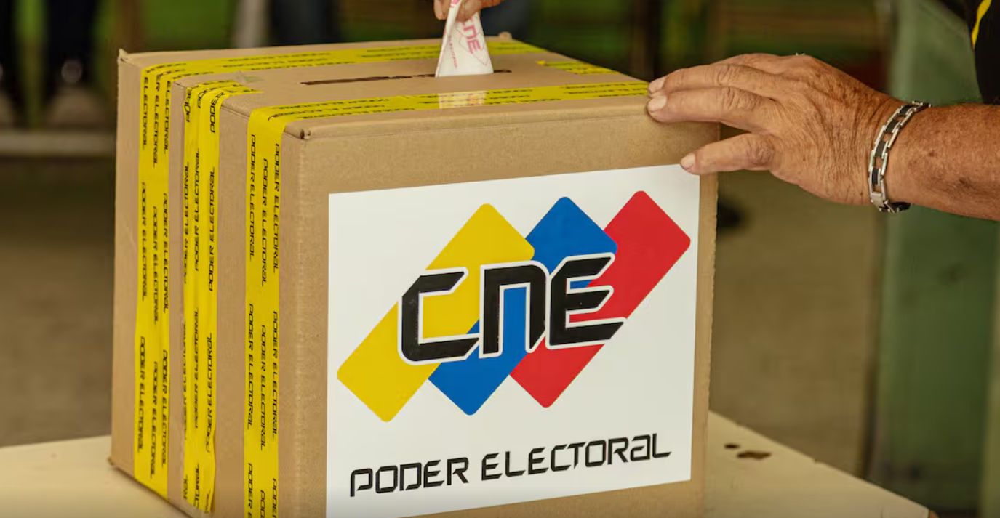

Consejo Nacional Electoral extiende por una hora más el proceso de votación en Venezuela
El presidente del Consejo Nacional Electoral (CNE), Elvis Amoroso, informó que el proceso de votación para los comicios regionales y legislativos de este domingo se extenderá una hora más por la alta afluencia de ciudadanos en los centros electorales.
“En virtud de que se encuentran todavía muchos votantes en los centros electorales, hemos decidido prorrogar por una hora más o hasta que culmine la cola”, anunció en una transmisión por Venezolana de Televisión (VTV).
Amoroso pidió a los votantes permanecer tranquilos, asegurando que todos podrán ejercer su derecho. Además, destacó con orgullo la participación activa del “bravo pueblo de Venezuela”.
Datos clave del proceso electoral
- Electores convocados: 21,4 millones de ciudadanos
- Cargos en juego: 569 en total:
- 285 diputados a la Asamblea Nacional
- 24 gobernadores (incluido el del Esequibo)
- 260 legisladores regionales
- Centros habilitados: 15.736
- Mesas instaladas: 27.713
Según el CNE, a las 2:00 p. m. (hora local), el 100 % de las mesas estaban operativas, con una infraestructura tecnológica funcionando “plenamente” y una incidencia mínima del 0,72 %.
Reacciones desde el oficialismo
Los líderes del chavismo han celebrado la jornada como un paso clave para la “consolidación de la paz” en Venezuela. El ministro de Interior, Diosdado Cabello, calificó la participación como “muy buena” y desestimó los señalamientos de baja afluencia realizados por la oposición.
Estos comicios se desarrollan diez meses después de las presidenciales de julio de 2024, cuestionadas por sectores opositores que reclaman el triunfo de Edmundo González Urrutia frente al presidente Nicolás Maduro.